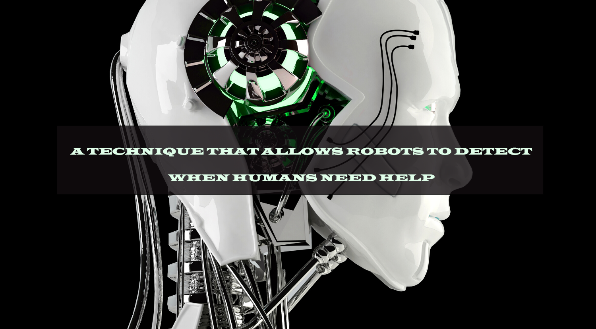

A TECHNIQUE THAT ALLOWS ROBOTS TO DETECT WHEN HUMANS NEED HELP
As robots are introduced in an increasing number of real-world settings, it is important for them to be able to effectively cooperate with human users.in addition to communicating with humans and assisting them in everyday tasks, it might thus be useful for robots to autonomously determine whether their help isneeded or not. Researchers at Franklin & Marshall College have recently been trying to develop computational tools that could enhance the performance of socially assistive robots, by allowing them to process social cues given by humans and respond accordingly. In a paper pre-published on arXiv and presented at the AI-HRI symposium 2021last week, they introduced a new technique that allows robots to autonomously detect when it is appropriate for them to step in and help users. "I am interested in designing robots that help people with everyday tasks, such as cooking dinner, learning math, or assembling Ikea furniture," Jason R. Wilson, one of the researchers who carried out the study, told TechXplore. "I'm not looking to replace people that help with these tasks. Instead, I want robots to be able to supplement human assistance, especially in cases where we do not have enough people to help." Wilson believes that when a robot helps humans to complete a given task, it should do so in a 'dignified' way. In other words, he thinks that robots should ideally besensitive to their users' humanity, respecting their dignity and autonomy.There are several ways in which roboticists can consider the dignity and autonomy of usersin their designs. In their recent work, Wilson and his students Phyo Thuta Aung and Isabelle Boucher specifically focused on preserving a user's autonomy. When humans need help with a given task, they can explicitly ask for assistance or convey that they are struggling in implicit ways. For example, they could make comments such as "hmm, I am not sure," or express their frustration through their facial expressions or body language. Other implicit strategiesused by humans to communicate that they need help involve the use of their eye gaze. "For example, a person may look at the task they are working on, then look ata person that can help them and then look back at the task," Wilson said. "This gaze pattern, called confirmatory gaze, is used to request that the other person lookat what they are looking at, perhaps because they are unsure if it is correct." The key objective of the recent study carried out by Wilson, Aung and Boucher was toallow robots to automatically process eye-gaze-related cues in useful ways. The technique they created can analyze different types of cues, including a user's speechand eye gaze patterns. "The architecture we are developing automatically recognizes the user's speech and analyzes it to determine if they are expressing that theywant or need help," Wilson explained. "At the same time, the system also detects users' eye gaze patterns, determining if they are exhibiting a gaze patternassociated with needing help." In contrast with other techniques to enhance human-robot interactions, the approach does not require information about the specifictask that users are completing. This means that it could be easily applied to robots operating in various real-world contexts and trained to tackle different tasks. While the model created by Wilson and his colleagues can enhance user experiences without the need for task-specific details, developers can still provide thesedetails to enhance its accuracy and performance. In initial tests, the framework achieved highly promising results, so it could soon be used to improve theperformance of both existing and newly developed social robots. "We are now continuing to explore what social cues would best allow a robot to determine when auser needs help and how much help they want," Wilson said. "One important form of nonverbal communication that we are not using yet is emotional expression. More specifically, we are looking at analyzing facial expressions to see when a user feels frustrated, bored, engaged or challenged."